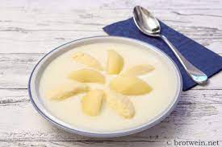

Buttermiksoup

Description
General recipe for a buttermilksoup.
Ingredients
- 2l buttermilk
- lemon skin
- 1 pinch salt
- 30-40g Maizena
- sugar
- vanilla sugar
Steps
- Mix all the ingredients exept the sugar.
- Get it to boil and season it with the sugar.
- If you want you can serve the soup with semolina dumplings .